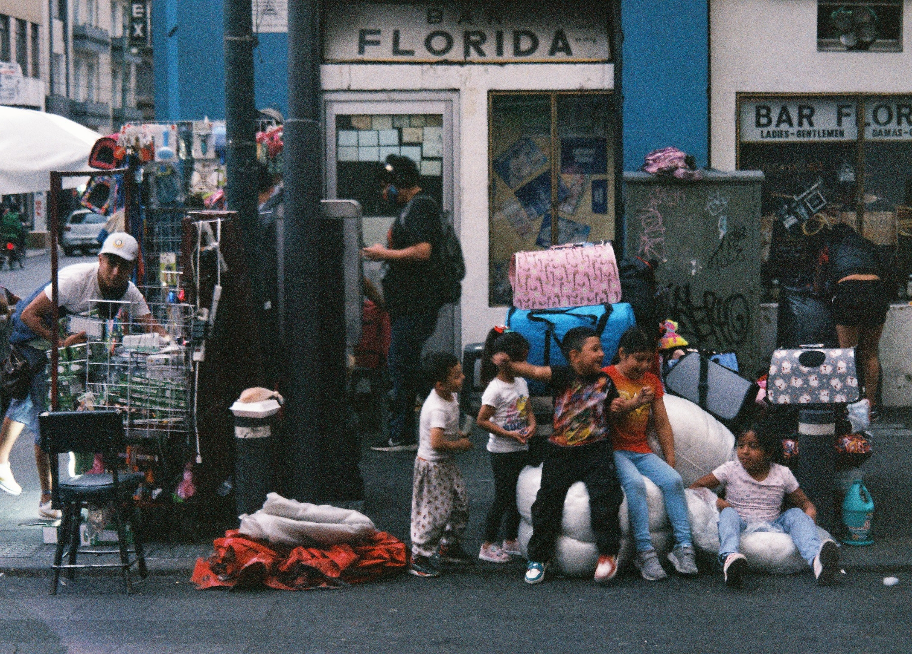
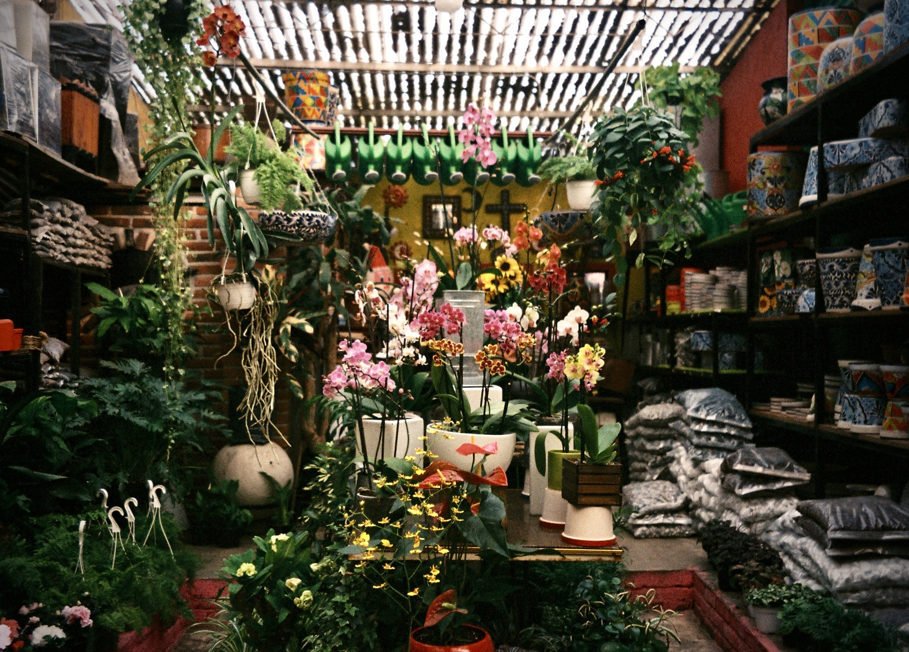
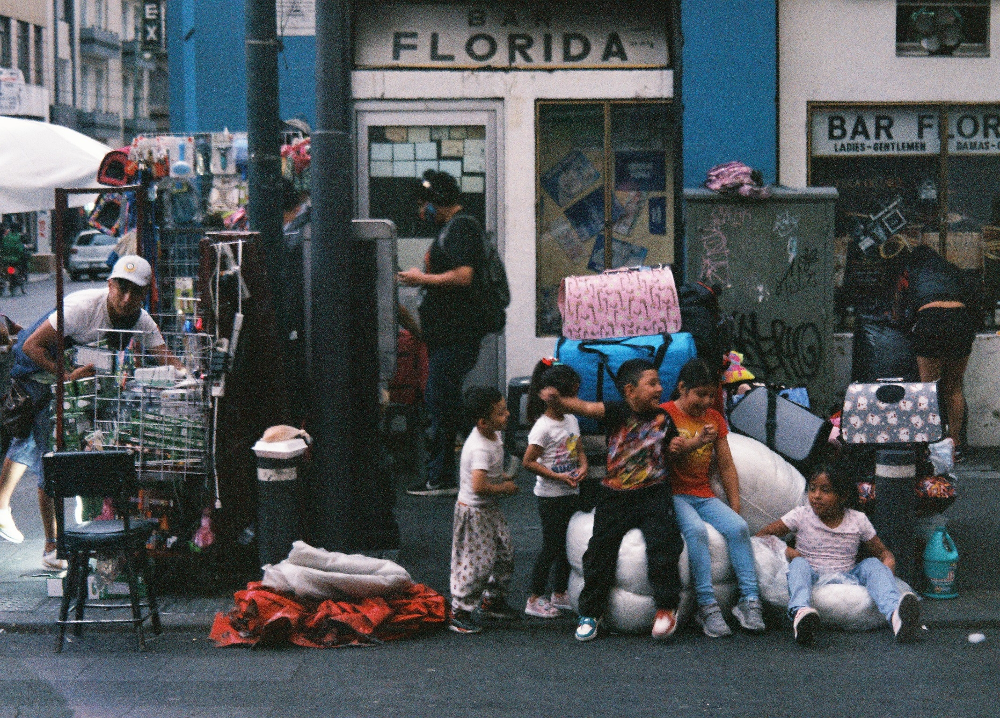
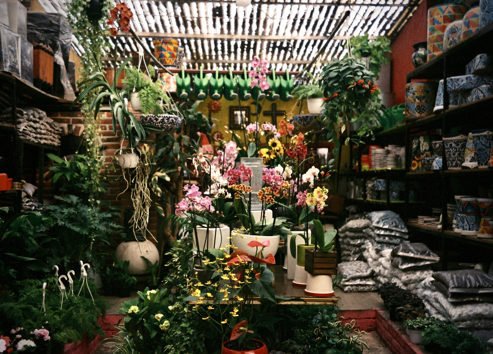
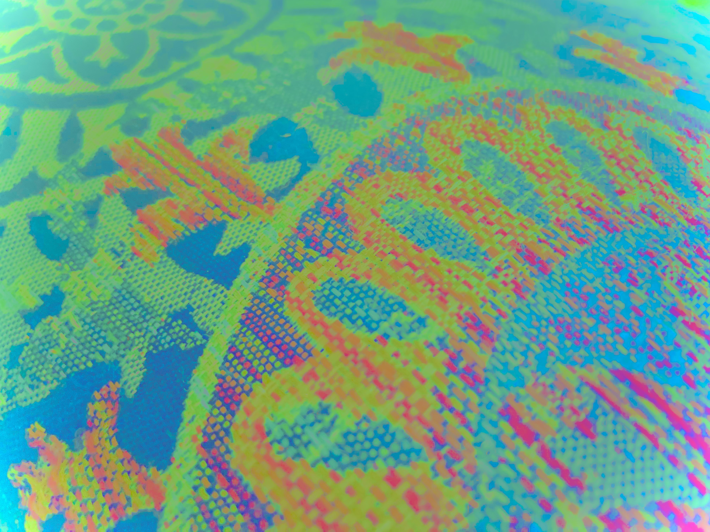
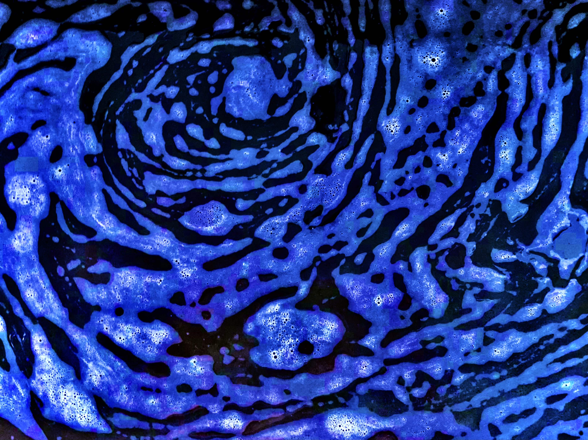
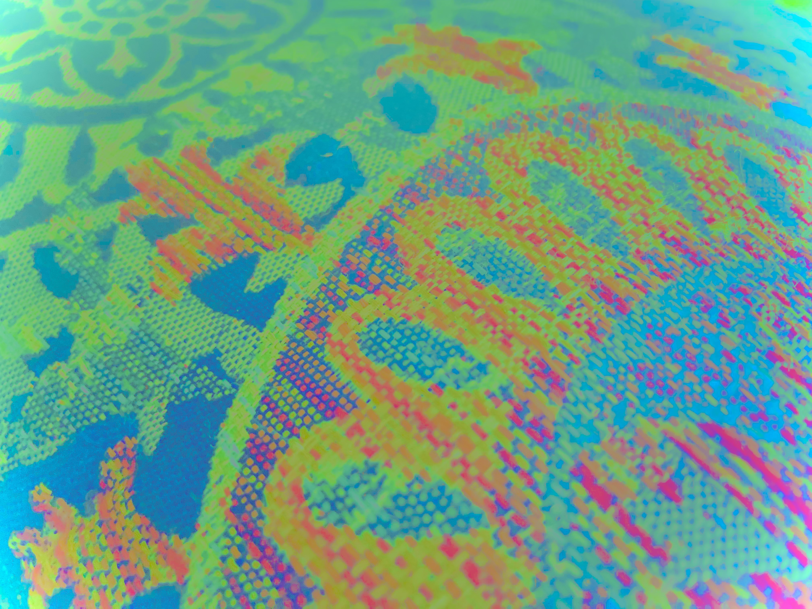
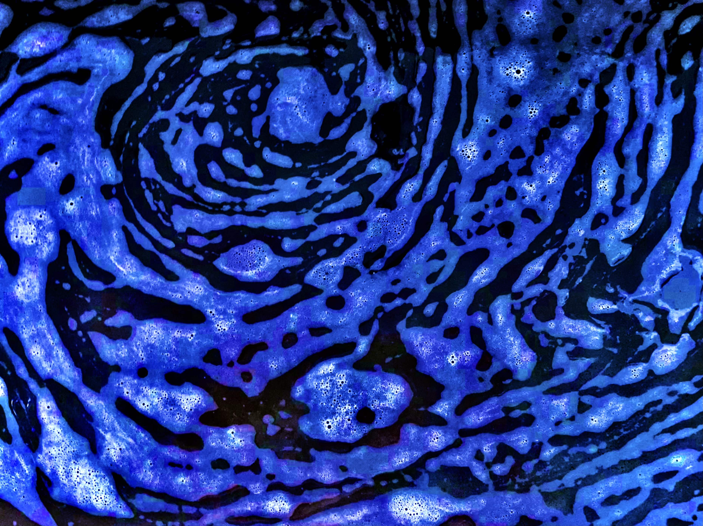

Hello, my name is Malhar Sapre (please call me Mally) and welcome to my website. I am an engineer by trade, and I enjoy expressing myself through music and art. My early roots are in Mumbai, my formative upbringing was in northern Virginia, my undergraduate studies at Virginia Tech, and now my life continues in the North Carolina triangle.
I am looking to grow into higher- level product and solution design, combining technical skills with design thinking and human- centered problem solving.
This course of study offered a comprehensive education at the intersection of technology and business. The BIT curriculum emphasized understanding business operations and decision-making frameworks while teaching how to design and implement systems that enhance these processes. My computer science minor provided additional depth in topics such as object-oriented programming, data structures, and algorithms, further strengthening my technical foundation. This combination provided me with a well-rounded perspective, blending technical expertise with business acumen.
Currently leading a team of technical experts in developing a cloud-based API framework that allows client applications to digitize documents using various AI tools.
Delivered end-to-end automation solutions for multiple LOBs integrating several technologies with RPA. Responsible for engaging with business stakeholders, gathering business procedure requirements, designing, building, and maintaining automation solutions.
Worked as an RPA developer using Blue Prism to deliver business automations primarily in the health claims space.
Worked in a systems analysis role to improve processes within the Deferred Annuities Actuarial (DAACT) application.
Conducted performance and functional UI testing for ManageID software.

I have been playing guitar since I was 8 years old. I enjoy playing all forms of music including rock, jazz, and classical. I am also a DJ in the thriving RDU electronic scene. Recently, I have also started to learn the sitar. Aside from playing instruments and DJing, I enjoy producing my own songs as well. Please feel free to check out some snippets below.
Film photography is a personal passion for me, not because I have deep technical expertise, but because I simply love the tactile sensation of freezing time. I especially love shooting film during my travels but I also quite frequently just step out for a stroll and carry my camera along. I also enjoy "editing" some of my digital photos so that they look completely abstract. I am not sure if theres really a technical term for it, but its just a fun and easy way for me to quench my artistic urges.
 



 


